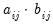

evaluates the cumulative distribution function value for the t-distribution for each element of the matrix X and places the results in the corresponding cells of the matrix TPROB. Note that DF may either be a scalar, or a matrix object of the same type and size as X.
See “Element Functions” for summaries of the various element functions.
The (i,
j)-th element of the matrix AB will contain the product of the corresponding elements of A and B: .
A function generally takes arguments, and always returns a result. Functions are easily identified by the initial “@” character in the function name.
stores the transpose of matrix X in the matrix
Y. Since
Y is a standard EViews matrix, it may be used in all of the usual expressions.
Second, you may use a function as part of a matrix expression. Since the function result is used in-line, it will not be assigned to a named object, and will not be available for further use. For example, the command:
uses the results of the @inverse and
@transpose functions in forming the scalar expression assigned to
Z. These function results will not be available for subsequent computations.
By contrast, a command takes object names and expressions as arguments, and operates on the named objects. Commands do not return a value.
For example, the automatic NA removal may be overridden using the stomna command. Additionally, some of the element operators may generate missing values as a result of standard matrix operations. For example, taking element-by-element logarithms of a matrix using
@log will generate NAs for all cells containing nonpositive values.
EViews follows two simple rules for handling matrices that contain NAs. For all operators, commands, and functions (with the exception of the descriptive statistics functions), EViews works with the full matrix object, processing NAs as required. For descriptive statistic functions, EViews automatically drops NAs when performing the calculation. These rules imply the following: